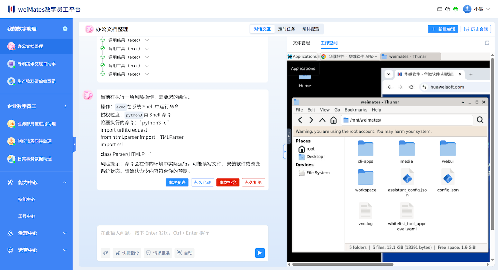

集中管理资产，支撑数字员工
业务技能（Agent Skill）、知识库、业务系统访问接口（MCP）等是构建数字员工所必须的关键要素，也是企业的核心资产。

企业级数字员工平台
华微软件 weiMates 数字员工平台帮助企业构建可协作、可编排、可治理的数字员工体系，使其在安全边界内连接系统、执行任务、沉淀流程，并持续创造业务价值。
平台定位
weiMates 集中管理数字员工所需的技能、知识、工具、流程与接口，让企业能够系统化构建、调度、治理和持续优化数字员工体系，使数字员工从单点提效走向跨岗位协同、跨流程协作和组织级价值创造，助力企业实现智能原生转型。
协作方式
weiMates 独特的界面设计，让用户既能直观地统筹不同数字助理/数字员工的工作，也能随时看到当前数字助理执行任务的细节，并在必要时参与关键步骤。

核心优势
从运行环境、安全治理到流程沉淀与业务理解，weiMates 的每一层能力都围绕企业级数字员工的可控落地展开。
业务技能（Agent Skill）、知识库、业务系统访问接口（MCP）等是构建数字员工所必须的关键要素，也是企业的核心资产。
把验证有效的动态流程固化为可执行的代码，可以在提升流程执行效率的同时，提升流程可靠性。
通过接入企业本体（Business Ontology），帮助数字员工理解企业内部语境，准确理解用户的真实意图。
数字员工可以从历史任务，以及与用户反馈中不断积累经验，持续优化角色能力与工作策略。
应用场景
不做抽象的“AI 提效”，而是让数字员工在明确的岗位职责、任务链路和业务约束中持续创造价值。
自动汇集多源业务数据，完成口径对齐、异常识别、趋势分析与结论提炼，帮助团队更快从数据走向决策。
围绕经营、项目或专项主题整理素材、生成初稿、补全图表与摘要、生成 PPT，让报告编制更轻松、更高质量。
连接生产计划、资源状态与异常信息，辅助排产协同、进度跟踪和例外处理，让现场响应更及时有序。
基于企业知识和业务系统完成问题识别、标准答复、工单流转与服务记录分析整理，提升服务一致性与响应效率。
安全治理
weiMates 平台的安全治理能力建立在零信任架构之上，并能与企业现有的身份与访问管理系统集成。平台为每个数字员工都赋予独立的身份，并结合其委托方的权限，为数字员工的每次操作都分配独立的访问令牌。
权威背书
weiMates 围绕企业级数字员工的安全治理、可信运行与落地实践，持续获得行业项目、专业榜单与信息安全测试的认可。
2026年广州市
首版次软件产品研发项目
广州人工智能创新发展榜单
“AI+安全”优秀案例
中国赛宝实验室
信息安全测试
中国泰尔实验室
智能体内生安全 5 级
客户信任
weiMates 正在与重点行业和高校客户共同推进数字员工实践，以真实组织环境中的场景验证，持续打磨平台的可治理、可落地能力。
重点行业客户
面向大型组织的复杂业务场景，验证数字员工在企业流程中的可治理协作价值。
重点高校客户
结合高校组织与知识密集型场景，推动数字员工能力在真实业务语境中持续验证。
持续关注

了解公司动态、产品发布与合作信息。

持续获取数字员工方法论、案例观察与实践内容。